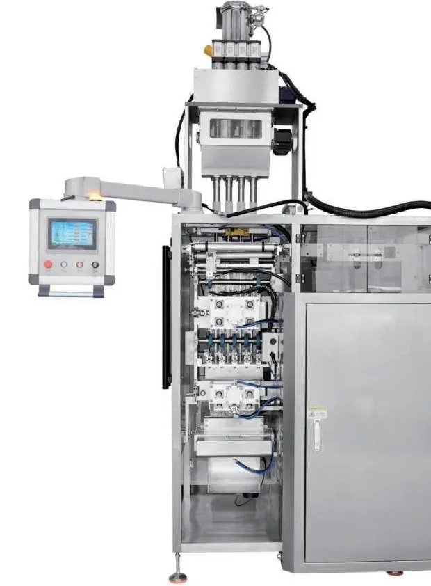
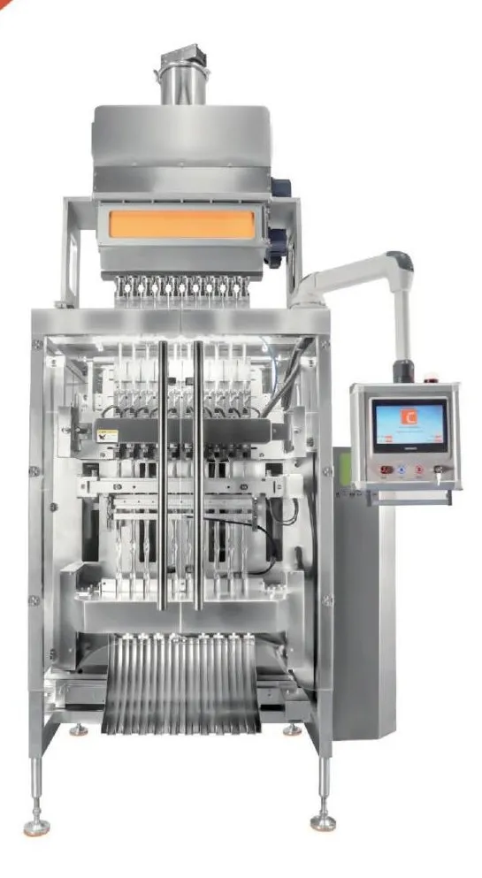
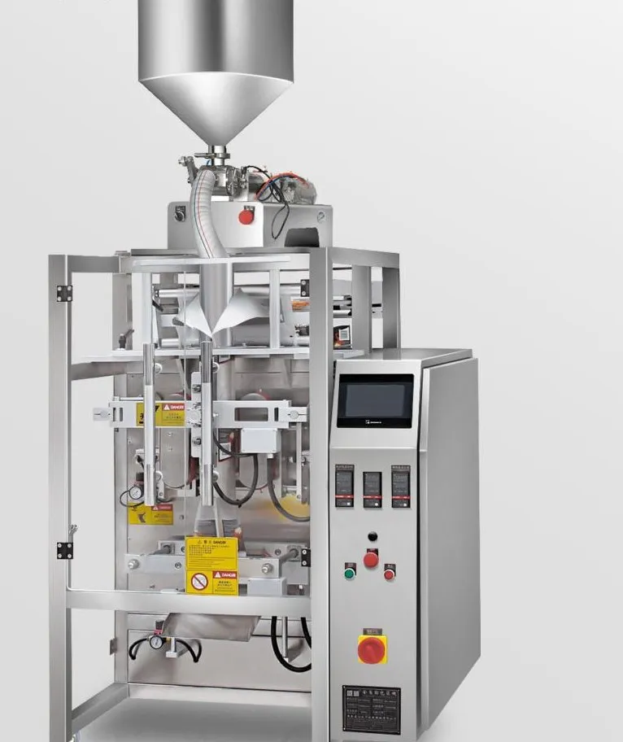
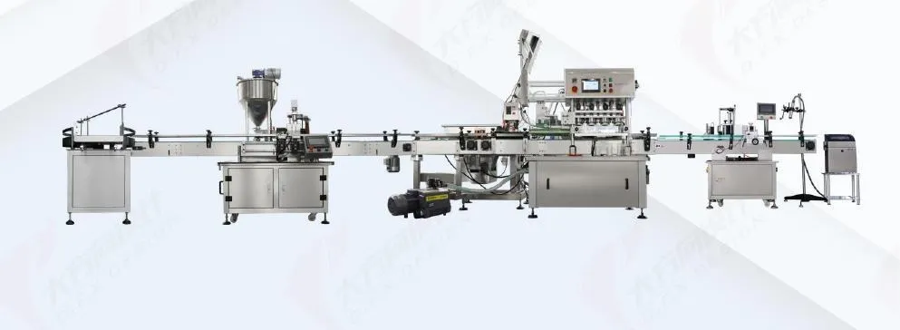
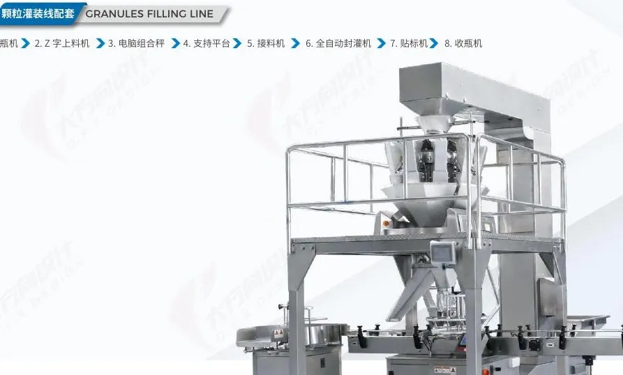

Automatic Packing Machines & Vertical Form Fill Seal System
FOOD LINE manufactures 13 automatic packing machines across 6 equipment categories: multi-lane sachet and stick-pack machines, our vertical form fill seal system, automated pouch packaging equipment, horizontal flow wrappers, bottle filling lines, 25 kg bagging lines and check weigher machines. Built in SUS304 / SUS316L with an 18-month warranty.
Multi-Lane Sachet & Stick Pack Machines
2 to 16 lanes running in parallel for small sachets and stick packs of powder, granules, liquid and paste — 3-side, 4-side or back seal.

Multi-Lane 4-Side Seal Powder Sachet Machine
Packs milk powder, coffee, protein, seasoning and medicinal powders into flat four-side-sealed sachets on 2 to 16 lanes at once — 25–40 sachets per lane per minute.
View specs →
Multi-Lane Stick Pack Machine
Back-seal stick packs for instant coffee, sugar, milk tea, electrolyte and protein powders, granules, honey and liquid — 2 to 16 lanes, 20–40 sticks per lane per minute.
View specs →
Single-Lane Sachet Powder Machine
A compact, affordable sachet machine for 5–100 g of powder in back-seal, 3-side-seal or 4-side-seal bags — ideal for start-ups and small batches.
View specs →Vertical Form Fill Seal (VFFS) Packing Machines
Bags made from roll film: pillow, gusset, stand-up and hanging-hole bags from 30 g to 5 kg+, matched with a multihead weigher, auger filler, cup filler or liquid pump.

Multi-function Vertical Snack Packer
A complete weigh-and-bag line for chips, puffed snacks, nuts, candy, dried fruit, frozen dumplings and pet food: Z-type elevator → multihead weigher → VFFS bagger → output conveyor.
View specs →
Vertical Form Fill Seal Machine
The bag-making mainframe at the heart of most packing lines — five frame sizes from 420 to 900 mm film width, matched with a weigher, cup filler, auger or liquid pump.
View specs →
Full-auto Coffee Powder Sealing Machine
Screw feeder → auger filler → vertical bagger for coffee powder, milk powder, flour, starch, spices, protein and chemical powders, with dust-controlled filling.
View specs →
Vertical Sachet Liquid Packaging Machine
Pumps and seals sauces, ketchup, edible oil, honey, vinegar, shampoo and liquid detergent into pillow sachets — viscosity-matched pumping for clean, leak-free seals.
View specs →Premade Pouch (Rotary Doypack) Packing Machines
8-station and 6-station rotary machines that pick, open, fill, seal and discharge zipper, stand-up, flat-bottom and spout pouches.

Horizontal Flow Wrap (Pillow) Packing Machines
Horizontal pillow packing for bread, cakes, biscuits, candy bars, ice-lollies, hardware and medical items, up to 230 packs/min.
Bottle & Jar Filling and Capping Lines
Turnkey liquid, sauce, powder and granule filling lines for bottles, jars and cans: unscrambler, filler, capper, labeller and collection table.

Liquid & Sauce Filling Line
Turnkey bottle and jar lines for sauces, oils, beverages without gas, cosmetics and chemicals: bottle unscrambler → piston filler → cap placer → capper → labeller → collection.
View specs →
Granule & Powder Jar Filling Line
Fills nuts, candy, coffee beans, dried fruit and powders into jars, cans and bottles: bottle unscrambler → Z elevator → multihead weigher or auger → capper/seamer → labeller.
View specs →Bulk Bagging Lines & Auxiliary Equipment
20–30 kg open-mouth bagging lines plus weighers, conveyors, check weighers, metal detectors, coders, air compressors and nitrogen generators.
Fully Automatic Granule Packaging Machine
Bucket elevator → storage hopper → dual-speed weigher → automatic bag placer → sewing or heat sealing → conveyor, for 20–30 kg bags of feed, fertiliser, grain, sugar and plastic pellets.
View specs →
Check Weigher Machine & Auxiliaries
Complete the line: check weigher machines, multihead and linear weighers, elevators, metal detectors, coding and utilities — supplied and tested together with your packing machine.
View specs →FAQ about our automatic packing machines
Which automatic packing machine fits my bag format and product?
Multi-lane machines pack 1–50 g sachets and stick packs at 20–40 cuts/lane/min; vertical form fill seal (VFFS) systems pack 30 g–5 kg+ bags from roll film; rotary premade-pouch machines handle zipper and stand-up doypacks; flow wrappers handle solid items; filling lines handle bottles and jars.
What is the difference between a vertical form fill seal system and a premade pouch machine?
A vertical form fill seal (VFFS) system forms bags directly from roll film for the lowest packaging cost per bag and speeds up to 70 bags/min. A premade pouch machine fills ready-made zipper, flat-bottom or spout pouches at 16–50 bags/min for retail shelf presentation.
Are FOOD LINE packing machines built with SUS304/316L and covered by warranty?
Yes. Food-contact parts are built in SUS304 stainless steel, with SUS316L optional for salty, acidic or corrosive products. Every machine is run-tested with your sample before shipment and backed by an 18-month warranty (wear parts excluded) plus lifetime technical support.
Get a free quote & machine recommendation
Tell us your product, pack weight and speed. An engineer replies within 24 hours with a recommended configuration, layout and price. Free product testing with video.